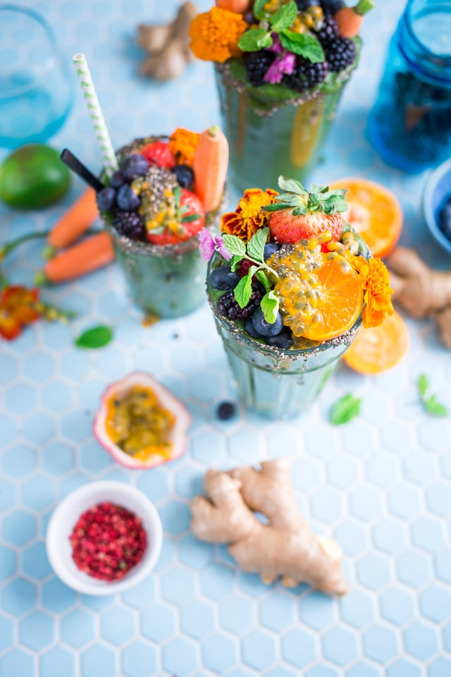

ingredients:
- berry strawberries200g
- raspberries 100g
- granulated sugar 100g
- butter 25g
- balsamic vinegar 2tbsp
- ice cream 200g
Step 1:
Rinse strawberries, dry, cut in half. Rinse the raspberries and place them on a paper towel to dry.
Step 2:
Melt the butter in a frying pan. Add strawberries, raspberries, balsamic vinegar and sugar.
Stir and cook over low heat for 5 minutes. Berries should be dark red in color.
Step 3:
Add a scoop of ice cream to a cocktail glass. Top - a layer of strawberries, raspberries, ice cream again.
Decorate the dessert with slices of fresh strawberries.